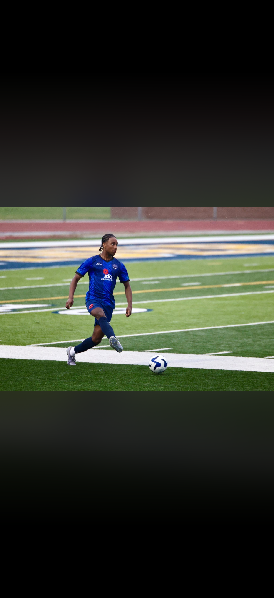
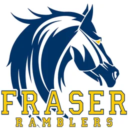

01
Age 5
The Beginning
Started playing soccer at age five and developed an early love for competition, teamwork, and improvement.
The path so far
From starting the game at age five to competing at the collegiate and semi-professional levels, every stage of my journey has helped shape me into the defender and teammate I am today.

Milestones
Started playing soccer at age five and developed an early love for competition, teamwork, and improvement.

Developed as a versatile defender while gaining valuable varsity experience and learning how to compete with discipline and consistency.
Starter for one of the top club teams in Michigan. Competed at a high level, strengthened his defensive awareness, and developed experience against elite competition.
Played with Metro Detroit Wheels during the past two summers, gaining semi-professional experience and competing against older, more experienced players.
Spent his first two college seasons with the reserve team in a player pool of more than 100 athletes. Became a regular starter and served as captain in several matches. Now preparing to compete for first-team opportunities.
Focused on continuing his development, earning a larger role at the collegiate level, completing his degree, and pursuing opportunities to play professionally after college.
Built for the next level
Comfortable playing right back, left back, and center back.
Leads by example and has served as captain in college reserve matches.
Two summers competing with Metro Detroit Wheels.
Continued development at Tiffin University in a highly competitive player environment.
Leadership in action
Served as captain in several college reserve matches.
Became a regular starter in a competitive reserve-team player pool.
Brings discipline, communication, and work rate to every session.
“Defending isn't just stopping goals—it's starting attacks.”
The work continues
My goal is to compete at the highest level possible, earn my degree, and continue pursuing opportunities to play professionally after college.
Watch Highlights